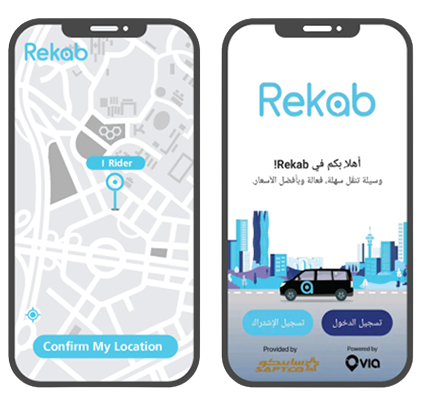
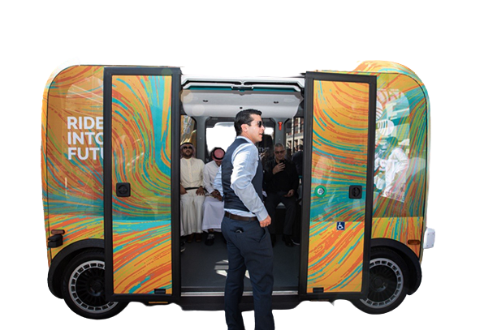

SAPTCO's digital services advance to the development of transportation service in the Kingdom of Saudi Arabia, the presentation of digital services in the Kingdom.
First: The Passenger Application Service
It is an innovative service for smart mobility within cities and within closed communities with a new and advanced participatory concept through an application for smart devices characterized by flexibility and ease of use in addition to vehicles equipped with the latest technologies. While adding more to the reliability of transportation by tracking the vehicle's path, ensuring that passengers reach their destination safely.

Second: Self-Driving Vehicles
In cooperation with King Abdullah University of Science and Technology (KAUST), and at the end of 2019, self-driving buses were operated on the university campus, so that SAPTCO and KAUST were among the pioneers in adopting smart vehicles, and this partnership contributes to motivating individuals to use public transportation in a way that improves the quality of The services provided in Saudi cities to achieve the goals of the Kingdom’s Vision 2030. The self-driving vehicles use maps, cognitive response technology, and Lidar technology Which works to determine the range by light or laser, and remote sensing using pulses of light, or through laser beams through which distances are calculated, and these systems allow avoiding obstacles to control, roam and drive the vehicle, knowing that both vehicles are sustainable and operate electrically All of them are environmentally friendly.

Third: The eJourney Platform
The perfect platform for booking buses and luxury and economic transport vehiclese-Gurney is the first platform in the region, providing vehicle reservation services for tourism and transportation purposes in an extremely easy and smooth experience.